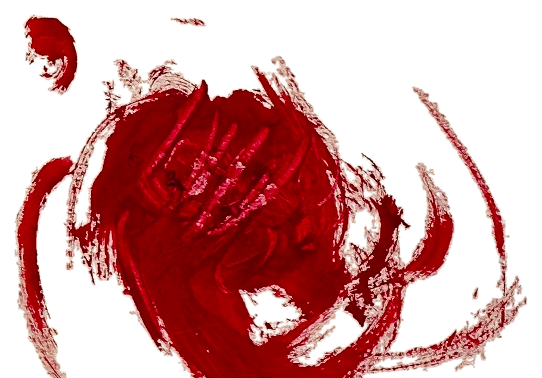
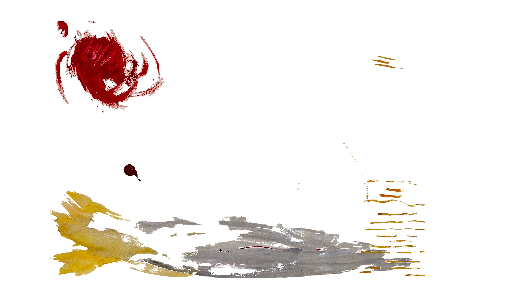
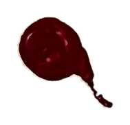
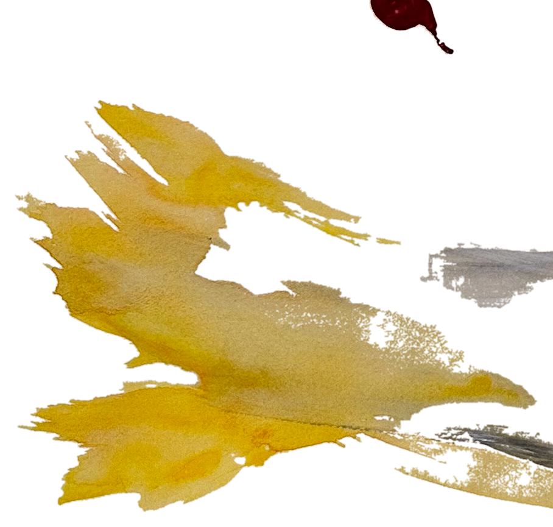
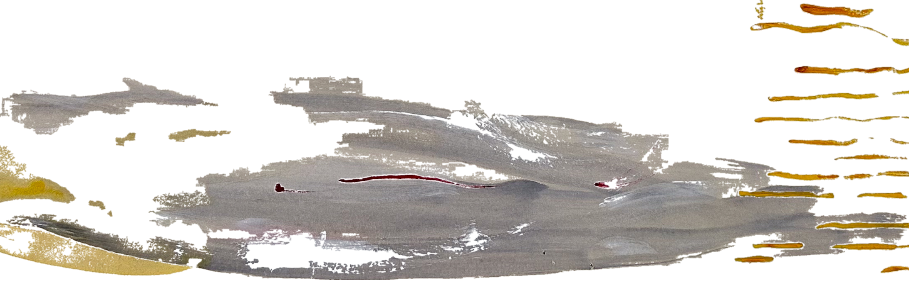
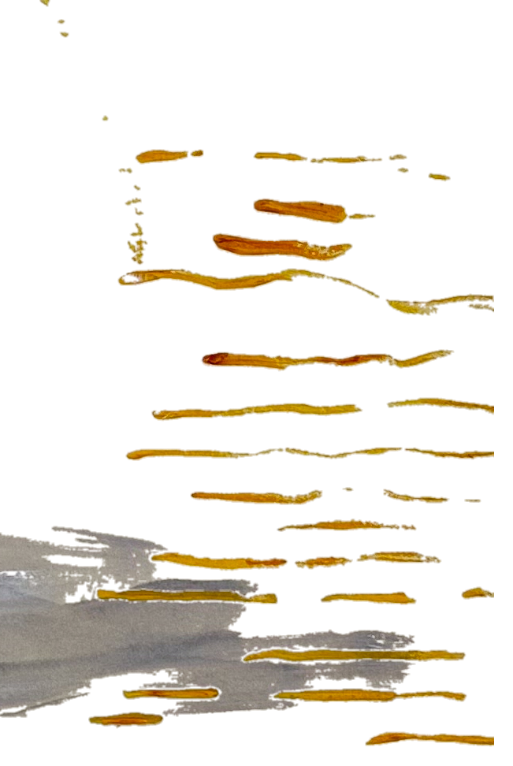

Remolino rojo
Pieza original de Roxana Galand (acrílico y acuarela sobre papel). Se extrajo la intervención pictórica y se eliminó el fondo —papel, cinta y mesa—. PNG transparente en alta resolución, listo para componer en piezas futuras del sistema.





